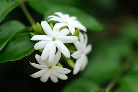

<!DOCTYPE html>
<html>
    <head>
        <title>
           Jasmine
        </title>
       <h1>Jasmine</h1>
       
    </head>

    <hr>

    <body>
        <p>
            Jasmine is an important flower crop that
could be grown on a commercial scale in
Kerala. Jasminum sambac is the most ideal
species for cultivation in Kerala. The
flowers are used for preparing garlands. The
jasmine oil has great export potential in
addition to its use for medicinal purpose.
        </p>
        
<h2>Important cultivars</h2>
<p>
  There are trailing, climbing and erect growing species and cultivars. Three important
species and their varieties are given as follows:
</p>
<p>1. Jasminum sambac: Gundumalli, Motia,
  Virupakshi, Sujimalli, Madanabanam,
  Ramabanam.</p>
  <p>
      2. Jasminum grandiflorum: Co-1 Pitchi,
Co-2 Pitchi, Thimmapuram, Lucknow.
  </p>
  <p>
      3. Jasminum auriculatum: Co-1 Mulla,Co-2 Mulla, Long Point, Long Round, Short
      Point, Short Round.
  </p>

  <h2>Soil and climate</h2>
  <p>
    Jasmine can be planted on a wide range of
soils. Well-drained sandy loams and red loams
are ideal for its cultivation. In clayey soils, there
is increased vegetative growth and reduced
flowering. They give good yield in low rainfall
conditions.
</p>

<h2>Propagation</h2>
<p>
  Layering and cutting are the main
propagation methods. Better rooting of
cuttings can be obtained by planting in coarse
sand and also by using any of the rooting
hormones like IBA (5000 ppm), IAA (1000
ppm) and NAA (5000 ppm). Simple and
compound layering methods are followed during June-July to October-November. Layers
will be ready for planting within 90-120 days.
</p>

<h2>Planting</h2>
<p>
  After ploughing the land, pits of about
40 cm x 40 cm x 40 cm size are taken and
filled with topsoil and 15 kg well rotten FYM.
Planting distance depends on the species as
given in table below and also on soil and environmental conditions.
Planting is usually done during June-August.
</p>

Species |||||||Planting distance
J. sambac |||||1.2 m x 1.2 m
J.auriculatum |1.8 m x 1.8 m
J.grandiflorum|2.0 m x 1.5 m

<h2>Manuring</h2>
<p>
  Each plant requires a fertilizer dose of
120 g N, 240 g P2O5
and 240 g K2
O. The
fertilizers are mixed together and applied in two
split doses during January and July. This has
to be supplemented with organic manures like
neem cake, groundnut oil cake etc. @ 100 g
per plant per month.
</p>

<h2>Pruning</h2>
Pruning is essential and is done at a height
of 45 cm from the ground level during mid
December-January
        </p>

<h2>Weed control</h2>
<p>
  Manual weeding is usually done which is
effective but expensive. Mulching also
reduces weed population.
</p>
  
<h2>Irrigation</h2>
<p>
  Constant and adequate water supply
during peak flowering season (March-October) is essential for high yield of flowers. After flowering is over, water supply can be cut
off. During summer, irrigate twice a week.
</p>
  
<h2>Diseases</h2>
<p>
  Fusarium wilt: Prevented by drenching the soil
with 1 per cent Bordeaux mixture.
</p>
  
<h2>Yield</h2>
<p>
  Yield of flowers and jasmine oil vary
according to the species and management
practices as presented below.</P>
<p>
Species Flower Oil yield
yield (t ha-1) (kg ha-1)
J. sambac 5 15.44,
J. auriculatum 5 28.00,
J.grandiflorum 6 29.00.
</p>

    </body>

</html>